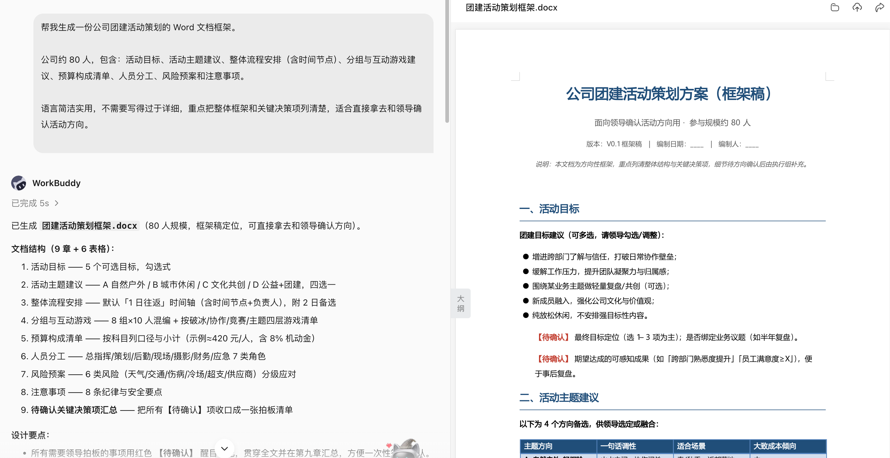
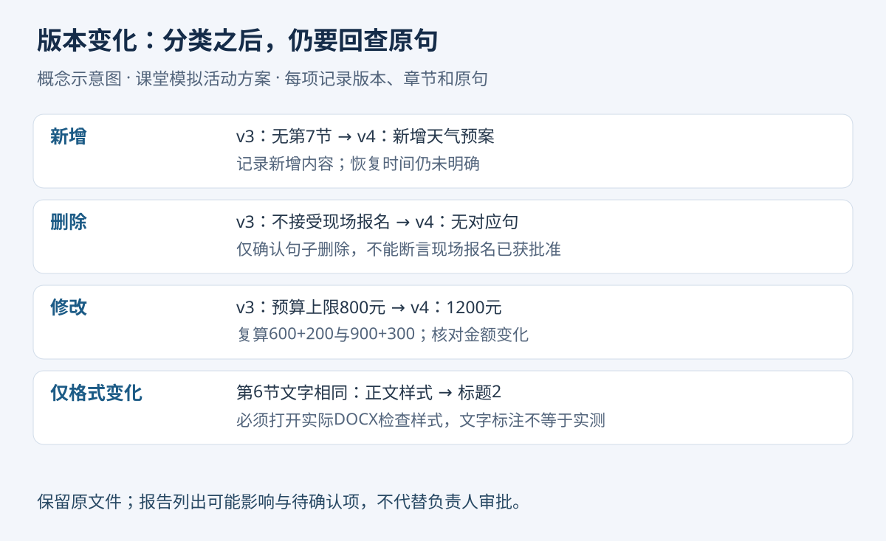
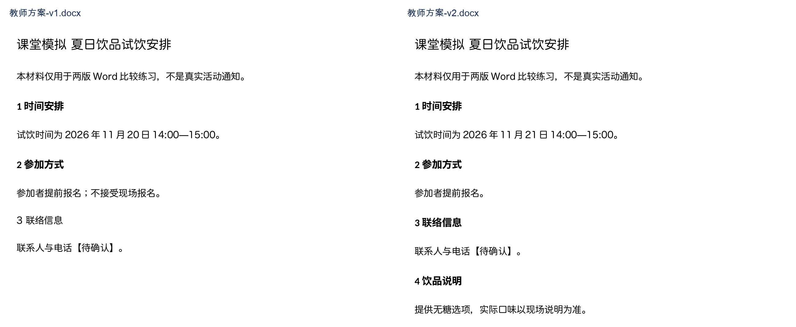
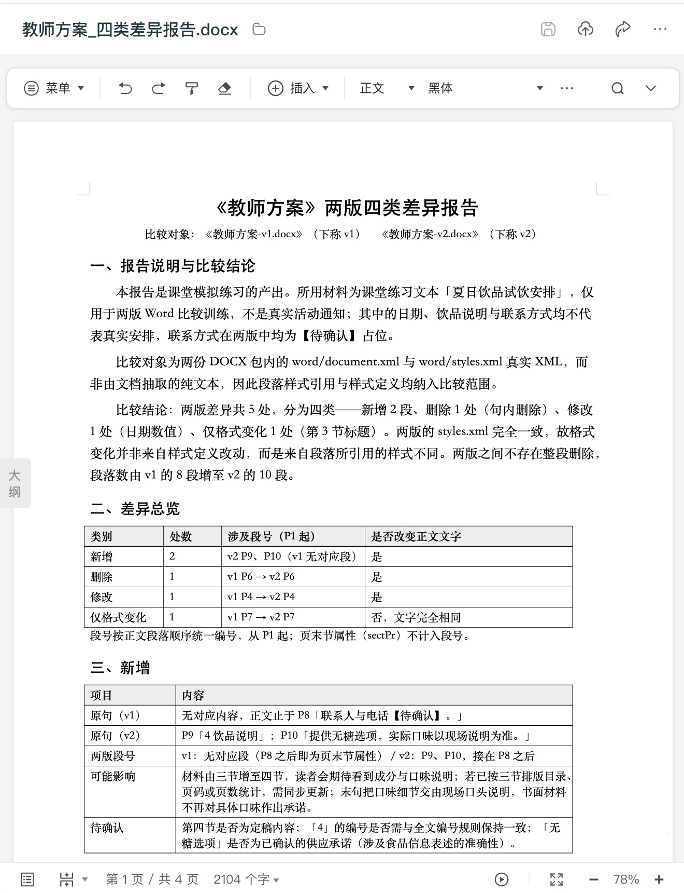

第三章 · 第10次课 · 2学时
办公实战：Word文档生成与批量处理
00 知识回顾
专家与专家团
- 专家负责一类任务的方法，专家团把不同环节分工后汇总成一个成果。
- 材料没有提供的信息不能让AI补造，生成后仍要人工核对。
01 任务预告
比较两版活动方案，完成一份差异核验报告
完成一份“两版方案差异核验”Word文档：把新增、删除、修改、仅格式变化分别列清，逐项写出原文位置、可能影响和待确认问题。
作业提交
方式与文件命名见学习通本次作业说明
02 基础概念
概念 1｜正式文档：先定读者和结构，再写正文

左侧说明人数、文档用途和结构要求；右侧框架稿列出活动目标与待确认事项。① 正式文档需要让指定读者完成一件事。先说清交给谁、用于讨论还是审批、依据什么材料、需要哪些章节，再让AI写初稿。
② 截图中先明确约80人规模、简洁实用和讨论活动方向的用途，再生成策划框架。正文将目标建议与【待确认】事项分开；AI给出的示例费用或安排仍须人工核实，不能视为已批准事实。
思考题： 只说“写一份正式方案”，没有读者和材料，AI写得完整就能提交吗？
参考答案：点击展开
答案： 不能。还要确认受众、用途、结构和事实来源，检查标题、预算与缺失项。
概念 2｜版本对比：逐项定位变化，再判断影响

概念示意图｜逐项看旧版与新版，先记录变化，再核对原句和真实样式。① 版本对比把变化分为新增、删除、修改和仅格式变化；批量处理则把同一规则用于多份文件。两者都要先确定输入范围、输出和检查口径，避免覆盖原稿。
② 教师比较两版试饮安排，学生再比较两版市集方案。文字、金额或日期变化要回到原句；只改标题样式时，要读取真实DOCX样式，并在WPS中查看对应标题。
思考题： “不接受现场报名”在新版中消失，可以直接说“新版允许现场报名”吗？
参考答案：点击展开
答案： 不能。只能确认原句被删除；是否允许现场报名仍要询问负责人，不能把删除否定句直接当成新的批准。
03 核心案例
例子｜比较两版试饮安排，找出文字与样式变化
案例背景
下载第10课教师示范材料，其中提供教师方案-v1.docx与教师方案-v2.docx，两份都是原创课堂模拟。新版将11月20日改为21日，删除“不接受现场报名”，新增饮品说明；“3 联络信息”文字不变，但由正文改成标题2。教师连续演示读取两份文件、审查计划、生成差异报告和回看真实样式。
两版材料对照

左为v1，右为v2；第3节同样写“联络信息”，右侧呈现标题层级。文字看起来相同，也可能发生样式变化。① 比较时先用文件名区分版本，再按正文顺序定位段落。此例P4改日期、P6删除句内内容、P7只改样式，v2的P9—P10为新增。
② “不接受现场报名”消失，只能确认限制句被删除；新版是否允许现场报名仍未说明。报告把变化事实与可能影响、待确认问题分开。
教师演示步骤
步骤①｜打开两份源文件并选中输入范围
将教师方案-v1.docx、教师方案-v2.docx放在一个独立课堂文件夹。在WorkBuddy新任务下方选择该文件夹作为工作空间，或将两份DOCX添加为材料。先用WPS打开两版，找到第3节，观察标题样式；然后回到WorkBuddy，说明只读两份源文件、另存报告。
两份源文件可打开，第3节文字相同；v1使用正文，v2使用标题2，不能只靠复制出来的文字判断。
步骤②｜让AI制定两份DOCX的比较计划
发送下面的计划请求。两份DOCX是比较依据，不把提示词中预先列出的差异当成文件已经读取。
请只读本次工作空间中的教师方案-v1.docx和教师方案-v2.docx，先确认能读取两份文件。
先列比较计划，暂不输出最终报告，不修改源文件。
比较新增、删除、修改、仅格式变化四类，每项用P1起的正文段号与原句定位。
除正文外，读取DOCX真实段落样式与样式定义；仅格式变化不能只凭纯文本判断。
把变化事实、可能影响与待确认分开；删除否定句不等于批准相反做法。
确认计划后再生成可编辑Word报告。
计划能说明两份文件、四类差异、原句定位和真实样式检查方法。
步骤③｜审查原句、段号和样式依据
查看计划是否给出两版对应段号，并说明读取段落样式和样式定义。此例两版P7均为“3 联络信息”，v1按Normal正文显示，v2引用Heading2；报告只写“文字没变”会漏掉这一项。发现把删除限制句解读为允许报名时，先要求修正判断。
原句与定位可回查；格式项有真实样式依据；不把删除限制句解释为新的批准。
步骤④｜确认计划，生成四类差异报告
确认后发送执行要求，保持两份源文件不变。
按确认的计划执行，另存“教师方案_四类差异报告.docx”，返回可打开的文件。
按新增、删除、修改、仅格式变化列清：两版段号、原句、变化事实、可能影响、待确认。
第3节标题文字若一致，继续核对实际段落样式；有变化才列为仅格式变化，并写出真实样式名。
删除“不接受现场报名”不能推出允许现场报名。
报告只说明这两份课堂模拟文件，不新增真实活动安排，不修改源DOCX。
报告四类差异都有对应依据；未知业务状态不补成已批准。
步骤⑤｜打开报告，回到源文件核对
用WPS打开生成的报告，先看四类差异总览，再回到两份源文件逐项定位。选中“3 联络信息”，查看开始选项卡中的样式：v1为正文、v2为标题2。报告中的P7样式变化与源文件一致，才保留格式结论。最后重新打开报告，确认文字、表格与源文件均可用。
四类均可回查，P7没有被误列为文字修改，源文件保持原内容。

右侧已打开DOCX，差异总览把新增、删除、修改、仅格式分开，并列出对应段号；继续回到源文件查看P7的真实样式。04 实践任务
主软件为WorkBuddy，WPS负责准备材料、人工核对和保存报告；只使用以下课堂模拟方案，不修改源文件，也不代替方案负责人作审批判断。
步骤①｜准备v3、v4方案与报告文档
在WPS分别新建policy-v3.docx和policy-v4.docx，按下方材料录入对应版本，仅复制正文，不复制括号内课堂标注。两版共有的第1—5节按相同规则排版，v4新增第7节沿用相同规则；v3第6节标题为正文样式，v4同一句设为“标题2”，保证仅格式变化可检查。另建最终报告，写“材料说明、AI计划、审查结论、差异清单、影响与待确认、核对记录”六个标题。
【课堂模拟材料：校园创意市集活动方案；不是真实通知】
两版共有的第1—6节编号对应，v4另新增第7节；共有内容除第6节标题样式外，均采用相同字体和版式。
【v3】
1 活动安排：2026年10月16日14:00—17:00，在校园文化广场举行。
2 预算：物料费600元、宣传费200元，预算上限800元。
3 人员分工：学生社团负责布置，指导教师负责现场秩序。
4 审批条件：指导教师确认方案后方可开展；不得未经确认自行开展。
5 注意事项：参加者须提前报名；不接受现场报名。
6 联络信息：联系人及联系电话【待确认】。（本节标题为普通正文样式）
【v4】
1 活动安排：2026年10月23日14:00—17:00，在学生活动中心一楼大厅举行。
2 预算：物料费900元、宣传费300元，预算上限1200元。
3 人员分工：学生社团负责布置，后勤联络员负责现场秩序。
4 审批条件：指导教师和活动中心管理员均确认方案后方可开展；不得未经确认自行开展。
5 注意事项：参加者须提前报名。
6 联络信息：联系人及联系电话【待确认】。（本节标题改为“标题2”样式，文字内容不变）
7 天气预案：遇暴雨暂停，恢复时间另行通知。
补充说明：括号内是课堂版式标注，不属于文档正文。第6节只有样式变化。材料未提供后勤联络员姓名、联系方式、审批是否完成及方案是否正式生效。
完成后： 两份源文件可打开，章节编号对应，第6节文字一致但样式不同；报告“材料说明”记录文件名与课堂模拟性质。
步骤②｜让WorkBuddy先列比较计划
把两份DOCX放入本次WorkBuddy工作区或添加为任务材料，再发送提示词A。若读取失败，先核对路径和文件是否可打开；也可用下方完整材料做文字对比，但必须写明“未检查真实DOCX样式”，不能把格式变化说成已实测。
下方已经包含课堂材料，不需要另贴材料。
请先制定两版方案的比较计划，暂不输出最终报告。
若本任务已提供policy-v3.docx、policy-v4.docx，请先确认能读取两份文件；以DOCX为事实来源，下方文字用于课堂核对。两者不一致时列出冲突，等待确认。
比较新增、删除、修改、仅格式变化四类差异；给每项附版本、章节编号和原句。重点检查金额、日期、责任主体、审批条件、例外及否定表达。
说明如何检查真实样式，如何把可能影响与待确认问题分开；不作法律或审批结论，不改动源文件。
若只读取下方文字，声明未核验DOCX实际样式，格式部分仅依据课堂标注。
【课堂模拟材料：校园创意市集活动方案；不是真实通知】
两版共有的第1—6节编号对应，v4另新增第7节；共有内容除第6节标题样式外，均采用相同字体和版式。
【v3】
1 活动安排：2026年10月16日14:00—17:00，在校园文化广场举行。
2 预算：物料费600元、宣传费200元，预算上限800元。
3 人员分工：学生社团负责布置，指导教师负责现场秩序。
4 审批条件：指导教师确认方案后方可开展；不得未经确认自行开展。
5 注意事项：参加者须提前报名；不接受现场报名。
6 联络信息：联系人及联系电话【待确认】。（本节标题为普通正文样式）
【v4】
1 活动安排：2026年10月23日14:00—17:00，在学生活动中心一楼大厅举行。
2 预算：物料费900元、宣传费300元，预算上限1200元。
3 人员分工：学生社团负责布置，后勤联络员负责现场秩序。
4 审批条件：指导教师和活动中心管理员均确认方案后方可开展；不得未经确认自行开展。
5 注意事项：参加者须提前报名。
6 联络信息：联系人及联系电话【待确认】。（本节标题改为“标题2”样式，文字内容不变）
7 天气预案：遇暴雨暂停，恢复时间另行通知。
补充说明：括号内是课堂版式标注，不属于文档正文。第6节只有样式变化。材料未提供后勤联络员姓名、联系方式、审批是否完成及方案是否正式生效。
完成后： AI只返回比较计划；列出了四类差异、原文定位方法及待确认项，将计划保存到报告“AI计划”。
步骤③｜审查分类规则和原文定位方法
检查计划是否覆盖新增、删除、修改、仅格式变化；每项是否保留两版章节与原句，是否重点核对金额、日期、责任主体、审批条件及否定表达。禁止覆盖源文件；未知内容不能补造。若AI打算把“删除不接受现场报名”直接解释为允许报名，先让它修正。
完成后： 在报告“审查结论”写“通过：仅比较并生成报告，保留源文件，结论可回查”，或“不通过：[具体问题]”；有错先修订计划。
步骤④｜生成差异清单与影响初稿
计划通过后发送提示词B。若输出DOCX，直接打开核对；若仅返回文字，把结果粘贴到报告相应章节。检查每行确实有原句和位置；“可能影响”只是供负责人核对的提示，不写成新制度已生效。
下方已经包含课堂材料，不需要另贴材料。
比较计划已经人工审查，请按确认的口径生成《两版方案差异核验报告》。
事实来源与冲突处理沿用已确认计划；只比较，不修改policy-v3.docx和policy-v4.docx。
报告分为材料说明、差异清单、可能影响、待确认问题、核对记录。
差异表列：编号、差异类别、v3位置与原句、v4位置与原句、变化说明、可能影响、人工核验状态。新增项旧版写“无对应条款”，删除项新版写“无对应条款”；同一变化不重复计数。
重点核对金额、日期、责任主体、审批条件、例外和否定表达。不能因否定句消失就断言相反行为已获批准；不能断言新版已生效。
仅格式变化须有实际DOCX样式检查依据；若只有课堂文字标注，写“依据标注，真实样式待核验”。金额合计只按给出的数字核算，不增加支出。
能够生成文件时，把报告另存为一份 DOCX，保留两份源文件；若无法生成文件，返回完整报告正文，并明确尚未保存DOCX。
【课堂模拟材料：校园创意市集活动方案；不是真实通知】
两版共有的第1—6节编号对应，v4另新增第7节；共有内容除第6节标题样式外，均采用相同字体和版式。
【v3】
1 活动安排：2026年10月16日14:00—17:00，在校园文化广场举行。
2 预算：物料费600元、宣传费200元，预算上限800元。
3 人员分工：学生社团负责布置，指导教师负责现场秩序。
4 审批条件：指导教师确认方案后方可开展；不得未经确认自行开展。
5 注意事项：参加者须提前报名；不接受现场报名。
6 联络信息：联系人及联系电话【待确认】。（本节标题为普通正文样式）
【v4】
1 活动安排：2026年10月23日14:00—17:00，在学生活动中心一楼大厅举行。
2 预算：物料费900元、宣传费300元，预算上限1200元。
3 人员分工：学生社团负责布置，后勤联络员负责现场秩序。
4 审批条件：指导教师和活动中心管理员均确认方案后方可开展；不得未经确认自行开展。
5 注意事项：参加者须提前报名。
6 联络信息：联系人及联系电话【待确认】。（本节标题改为“标题2”样式，文字内容不变）
7 天气预案：遇暴雨暂停，恢复时间另行通知。
补充说明：括号内是课堂版式标注，不属于文档正文。第6节只有样式变化。材料未提供后勤联络员姓名、联系方式、审批是否完成及方案是否正式生效。
完成后： 报告包含四类差异、定位、影响和待确认问题；无法检查样式的地方有明确限制说明。
步骤⑤｜逐项回查，保存报告并重新打开
| 检查什么 |
正确／有错 |
| 新增、删除、修改、仅格式变化四类均有说明，未重复计数 |
[填写] |
| 每项变化有版本、章节编号与原句，金额合计可回查 |
[填写] |
| 日期、地点、责任人、审批条件和否定表达均被检查 |
[填写] |
| 第6节真实样式核验情况如实记录；未知内容仍待确认 |
[填写] |
| 原文件未改，报告能打开，未断言方案已审批或生效 |
[填写] |
人工参考：第1节日期、地点改变；第2节金额改变且两版合计分别为800元、1200元；第3节现场秩序责任主体改变；第4节增加确认主体；第5节删除否定句；第6节仅标题样式改变；第7节新增天气预案。分类允许把第4节记为“修改”并说明新增条件，不重复计数。至少回查一项否定表达及一项金额，不推断方案已批准。
完成后： 保存文档，关闭后重新打开；报告包含计划、审查、差异、影响与核对记录，两份源文件未被覆盖。
05 本课总结
成果卡
| 我的作品 |
我的文件里应有 |
提交前检查 |
| 两版方案差异核验报告 |
材料与文件说明
AI计划及审查结论
四类差异与原文定位
可能影响、待确认问题及核对记录 |
□ 报告对应本次两份原材料
□ 否定表达未被误判
□ 金额能回查
□ 样式核验情况如实说明
□ 原文件保留且报告重开正常 |